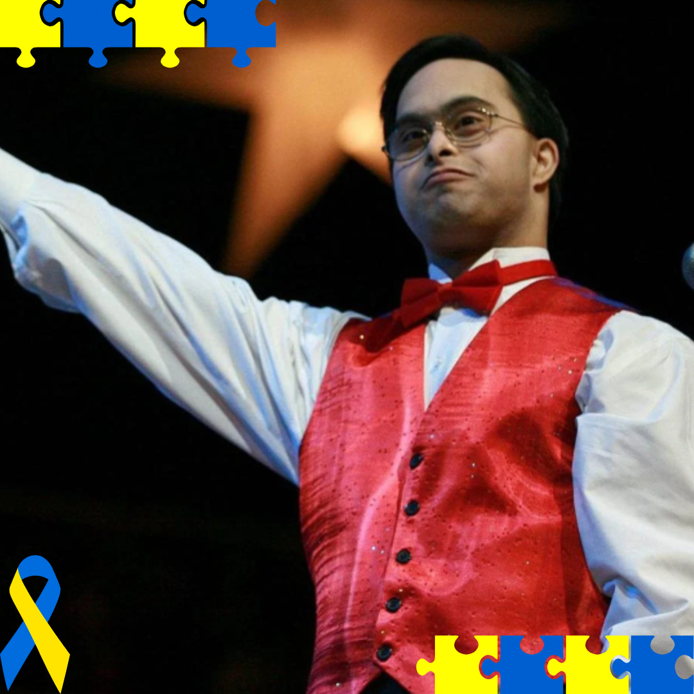
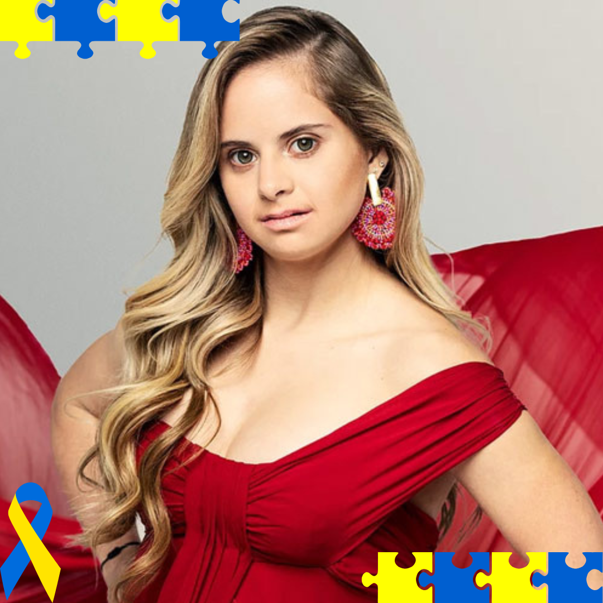
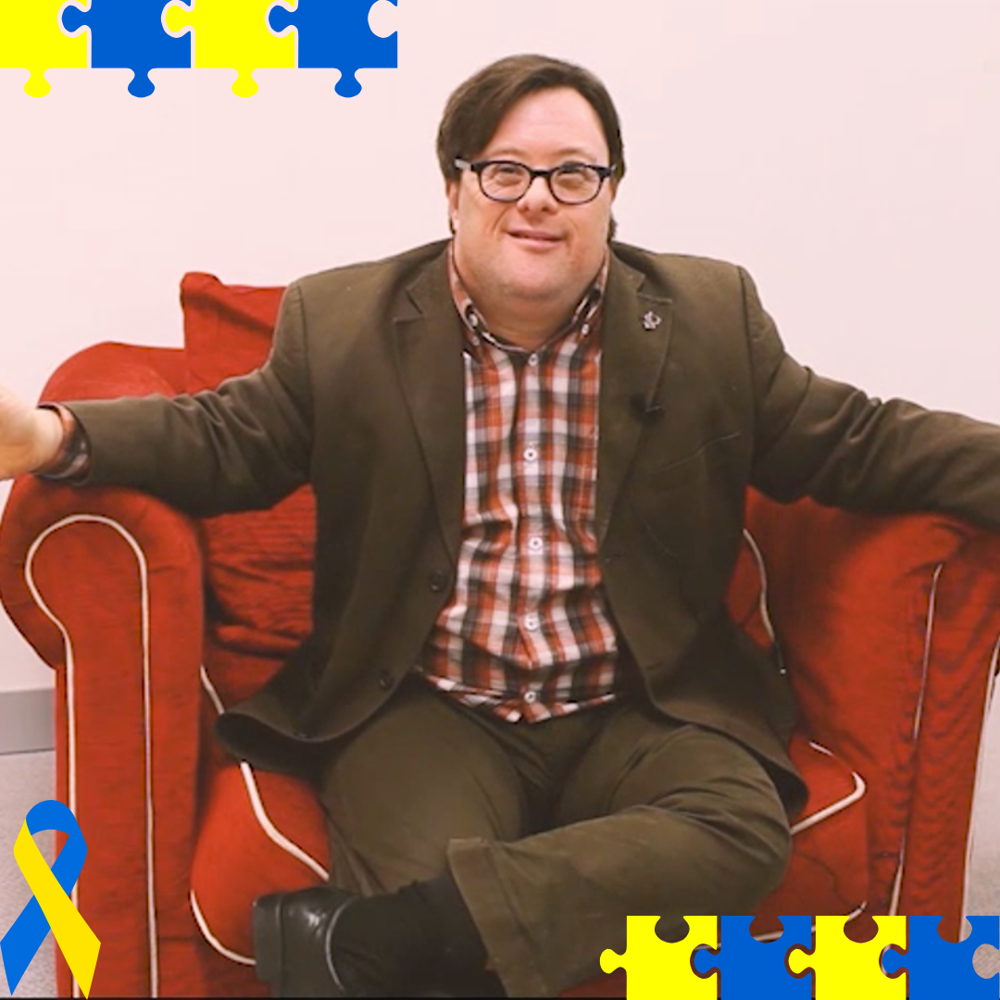
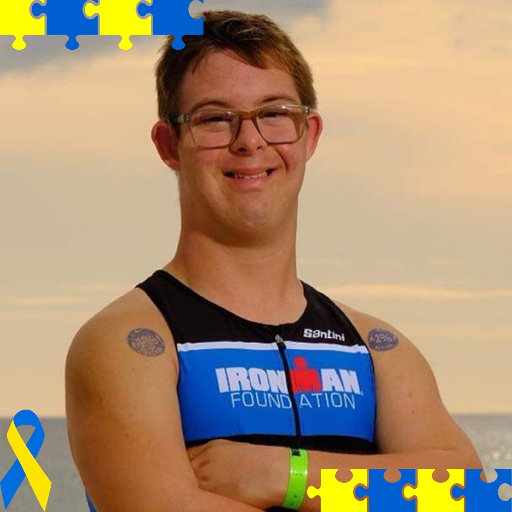
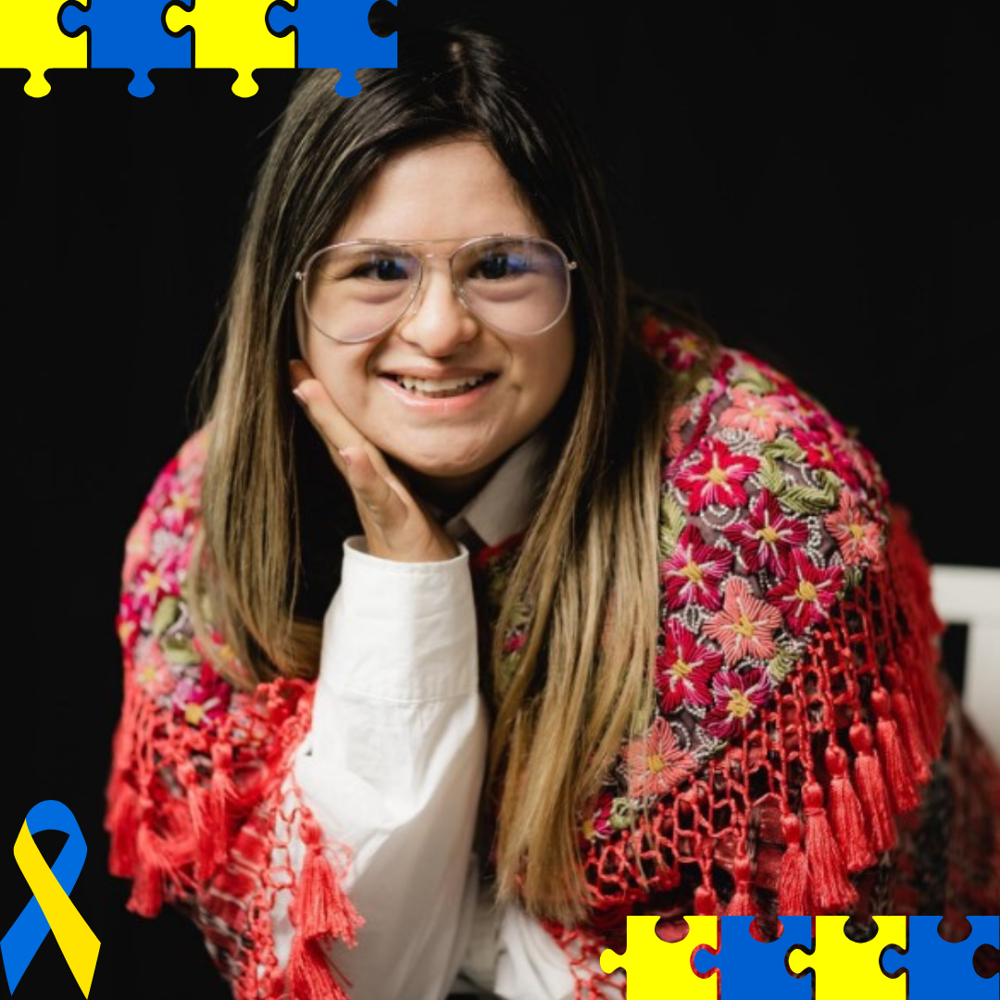

21 de Março o Dia Internacional da Síndrome de Down
No dia 21 de Março é comemorado o Dia Internacional da Síndrome de Down. Esse é um dia muito importante, pois tem o objetivo de dar visibilidade e conscientização às pessoas com essa condição tão única e especial. As pessoas com Síndrome de Down são conhecidas por sua alegria e entusiasmo. Elas têm uma capacidade incrível de encontrar alegria nas coisas simples da vida e de compartilhar essa alegria com os outros.
O dia também tem como objetivo mostrar que a educação inclusiva é fundamental para todos e desmistificar o mito de que pessoas com essa condição não podem trabalhar ou estudar. Pensando nisso, pegamos uma lista de pessoas que conseguiram realizar seus sonhos, tendo síndrome de Down, mostrando que essa condição não é uma barreira ou algo que prejudique a pessoa que a tem, mas sim uma condição muito especial que dá a essas pessoas características lindas e únicas.
Sujeet Desai (Músico)
Sujeet Desai é um músico realmente incrível, que surpreende a todos e encanta o mundo com seu talento. Mesmo tendo nascido com Síndrome de Down, ele mostrou que a paixão pela música e a persistência não conhecem barreiras. Sujeet domina sete instrumentos, como o clarinete, o violino, o piano e o saxofone.
Depois de se graduar no Berklee College of Music, uma das escolas de música mais famosas do planeta, ele virou um artista famoso no mundo todo. Sujeet já fez shows em vários países, inclusive na ONU e no Carnegie Hall, tocando o coração das pessoas e provando que inclusão e talento podem andar lado a lado.
Além de músico, ele também é um orador motivacional e luta pela inclusão, mostrando que com incentivo e força de vontade, qualquer pessoa pode realizar seus sonhos!
Sofia Jirau (Modelo)
Sofía Jirau, modelo de Porto Rico, marcou seu nome na história da moda de forma notável. Nascida com Síndrome de Down desde o nascimento, ela enfrentou desafios e se consagrou como a primeira modelo com essa condição a participar de um desfile da Victoria’s Secret, marca de grande prestígio global.
Desde a infância, Sofía cultivava o sonho de ser modelo e, com persistência admirável, alcançou reconhecimento nas passarelas mundo afora. Além de sua atuação como modelo, ela criou sua própria grife de roupas, denominada "Alavett", e se destacou como uma grande apoiadora da inclusão dentro da indústria da moda.
Com sua postura motivadora e seu talento inegável, Sofía Jirau prova ao mundo que beleza e sucesso podem ser alcançados por todos, sem restrições!
Pablo Pineda (Ator e Escritor)
A história de Pablo Pineda é uma verdadeira inspiração de triunfo e resiliência. Ele se tornou o pioneiro na Europa ao concluir o ensino superior com Síndrome de Down, graduando-se em Pedagogia. Atualmente, ele dedica-se a palestras, à escrita e à atuação, usando sua influência para promover a defesa dos direitos e a inclusão das pessoas com deficiência.
Pablo teve um papel de destaque no filme "Yo, también", no qual representou um personagem com semelhanças à sua vida, recebendo reconhecimento no Festival de Cinema de San Sebastián pela sua performance.
Através de sua garra e encanto pessoal, ele demonstra que a Síndrome de Down não é um fator limitante para o sucesso individual, e sua jornada segue motivando pessoas no mundo todo.
Chris Nikic (Atleta)
Chris Nikic entrou para a história ao concluir um Ironman, considerado um dos triatlos mais desafiadores, sendo o primeiro atleta com Síndrome de Down a alcançar tal feito. A prova exige que os competidores nadem 3,8 km, pedalem 180 km e corram 42 km, representando um verdadeiro desafio de força física e resiliência mental.
Desde pequeno, Chris enfrentou desafios para desenvolver suas habilidades motoras, mas nunca desistiu. Com muito treino e determinação, ele não apenas completou o Ironman, mas também se tornou um exemplo de superação e inclusão no esporte.
Hoje, Chris é palestrante motivacional e usa sua história para inspirar outras pessoas a superarem seus próprios limites e seu lema é: "Ser 1% melhor a cada dia" – uma filosofia que prova que não existem barreiras para quem tem determinação e coragem!
Isabella Springmühl (Estilista)
Isabella Springmühl é uma talentosa estilista da Guatemala e a primeira designer de moda com Síndrome de Down a conquistar reconhecimento internacional. Desde pequena, ela sonhava em criar roupas e, apesar de enfrentar desafios para ingressar na faculdade de moda, nunca desistiu de seu objetivo.
Determinada a seguir sua paixão, Isabella criou sua própria marca, "Down to Xjabelle", com coleções inspiradas na cultura guatemalteca e voltadas para tornar a moda mais inclusiva e acessível. Seu talento a levou a apresentar suas criações em eventos como a London Fashion Week, um dos maiores palcos da moda mundial.
Com seu trabalho, Isabella não apenas conquistou o mundo fashion, mas também mostrou que a criatividade e a determinação não conhecem limites!
Isso mostra o quão importante a inclusão é, porque é através dela que vemos que todos tem a oportunidade de ser o que quiserm e realizar seus sonhos, com ou sem uma condição especial, nessa lista foram colocados só alguns exemplos, mas temos dicversos exemplos para serem usados como inspiração e nos fazer entender que o limite somos nós mesmo que nos colocamos !
21 de Março - Dia internacional da Síndrome de Down
Escrito por Jean Paulo Jampietri de Paiva Junior
Colaboração de Lindinalva Reis da Silva